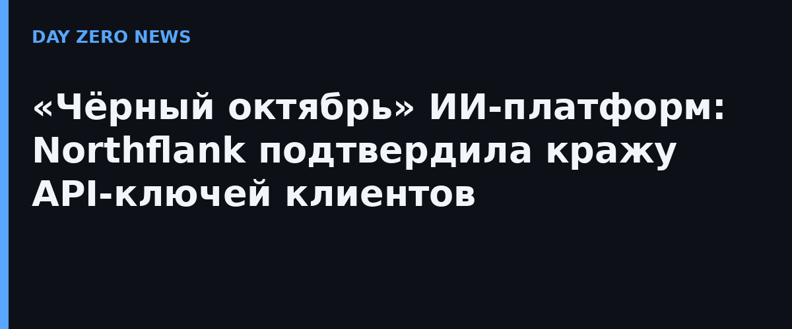

30 октября Northflank — облачная платформа, на которой разработчики разворачивают приложения, базы данных и ИИ-сервисы, — получила предупреждение от компании облачной безопасности Wiz и в тот же день признала инцидент. Главное предупреждение прозвучало жёстко: «Считайте, что все переменные окружения расшифрованы. Отключайте и меняйте все ключи». В переменных окружения обычно лежат пароли к базам, токены авторизации и те самые API-ключи ИИ-сервисов. Чуть позже платформа подтвердила: сразу несколько клиентов сообщили о несанкционированном использовании их ИИ-ключей.
Согласно официальной странице инцидента, сигнал от Wiz поступил в 11:43 UTC, инженер Northflank посмотрел его минутой позже, в 12:02 UTC развернули первый сетевой патч, затем — ещё несколько до 13:05, к разбору подключили команду реагирования Wiz. К вечеру 30 октября Northflank рекомендовала всем клиентам немедленно ротировать секреты в workloads, группах секретов и глобальных секретах, а к 31 октября включила ротацию для PostgreSQL, MongoDB, MySQL, Redis, Minio и RabbitMQ и открыла журналы аудита даже бесплатным аккаунтам. Как именно проникли атакующие, сколько клиентов задето иукрали ли что-то кроме ИИ-ключей — платформа не сообщает.
Northflank — не одиночный случай. В отчёте Wiz «Black October for AI Developer Platforms» за октябрь насчитывается минимум девять инцидентов на платформах для ИИ-разработки: Railway, OpenCode, Warp, Lightning AI и другие. По оценкам Wiz, атакующие целенаправленно охотятся за переменными окружения с ИИ-креденшелами: в двух расследованных случаях угнанными корпоративными учётными данными сделали около 2,5 млн вызовов Amazon Bedrock — примерно на 100 тысяч долларов чужого ИИ-трафика. Практика получила название LLMjacking: украденные ключи тратят на дорогих моделей или перепродают доступ.
Если вы держите проекты на Northflank или похожих платформах: отзовите и перевыпустите все API-ключи провайдеров ИИ (для начала — OpenAI и Anthropic), задайте лимиты расходов на ключах, проверьте биллинг-логи ИИ-провайдеров на неожиданные вызовы, отключите публичный доступ к аддонам и поднимите ротацию паролей баз. Общий вывод из «чёрного октября»: ключ в переменной окружения больше не считается «просто настройкой» — это актив, за которым уже охотятся организованные атакующие.